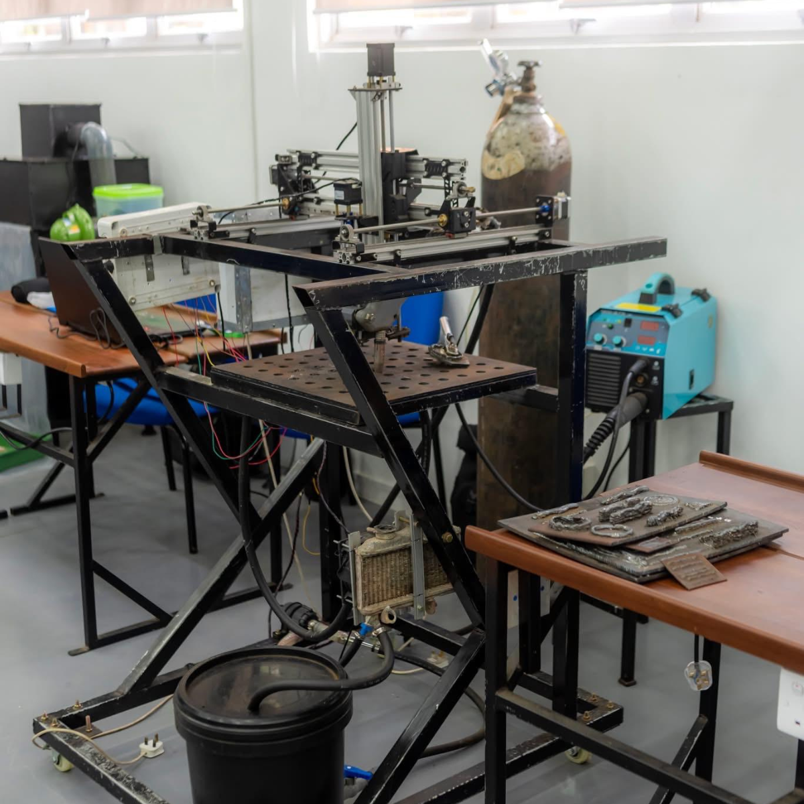
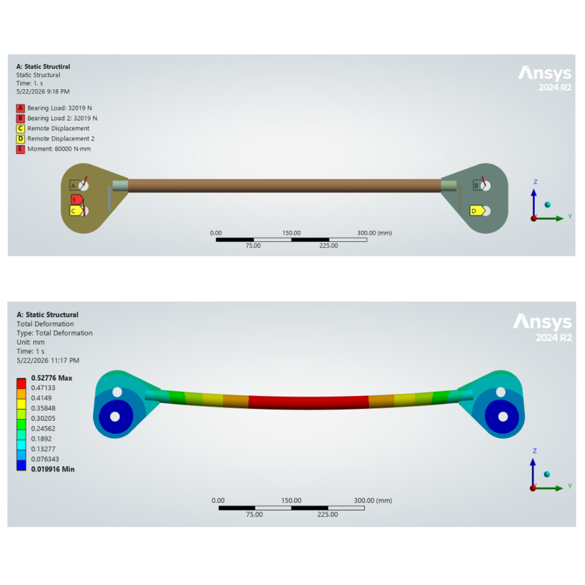
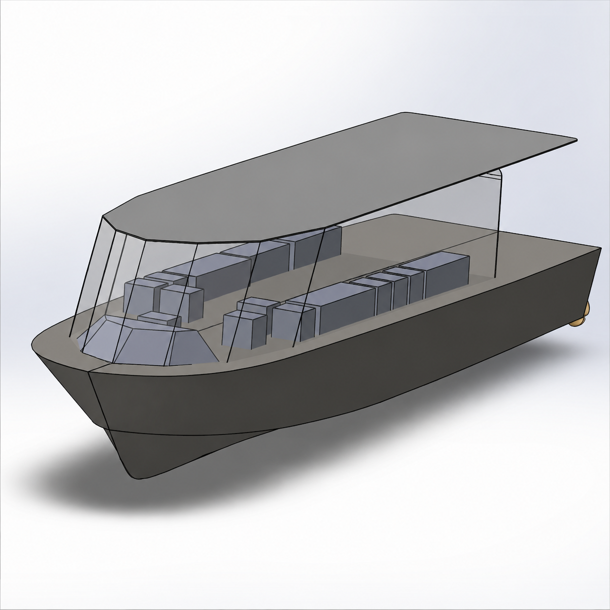

Project Archive
Design & Development of a Metal Additive Manufacturing System for Complex Component Fabrication

Designed and developed a low-cost Wire Arc Additive Manufacturing system for fabricating complex metal components using MAG welding. Improved motion accuracy and process stability through control-system modifications, arc-length control, substrate cooling, parameter optimization, and thermo-mechanical simulation using ANSYS and MATLAB/Simulink. Validated the system experimentally through multi-layer deposition, dimensional evaluation, microscopic analysis, hardness testing, and fabrication of complex geometries.
View Full Project ReportStatic Structural and Buckling Analysis of an Offshore Spreader Bar

Developed a three-dimensional spreader bar model in SOLIDWORKS and performed static structural and linear eigenvalue buckling analyses in ANSYS. Evaluated deformation, von Mises stress distribution, mesh independence, reaction-force equilibrium, and critical buckling behaviour, and validated the results against published research.
View Full Project ReportConcept Design of an Ambulance Craft for Operations in the Northern Islands, Sri Lanka

Designed a concept ambulance craft, including hull modelling, stability analysis, general arrangement, and propulsion selection, while ensuring compliance with marine standards.
View Full Project ReportDevelopment of a Below-Knee Prosthetic Leg Testing Machine

Designed a low-cost, hand-operated mechanism to simulate gait cycles for static and fatigue testing of below-knee prosthetic limbs.
View Full Project ReportDesign of a Gearbox for a Domestic Coffee Grinder

Designed a gearbox to enable multiple coffee grind sizes, optimizing the grinding process. Developed detailed 3D models and assemblies of the gearbox considering functionality and manufacturability.
View Full Project ReportReverse Engineering of a Cloth Iron

Identified materials and reverse-engineered all components of a domestic cloth iron. Developed 3D models using SolidWorks and performed FEA to recommend design improvements.
View Full Project ReportSmart Waste Management System

Developed a smart waste management system using image classification on a Raspberry Pi for waste sorting, integrating Arduino-based compression and sealing mechanisms, real-time monitoring, and waste generation pattern analysis.
View Full Project Report